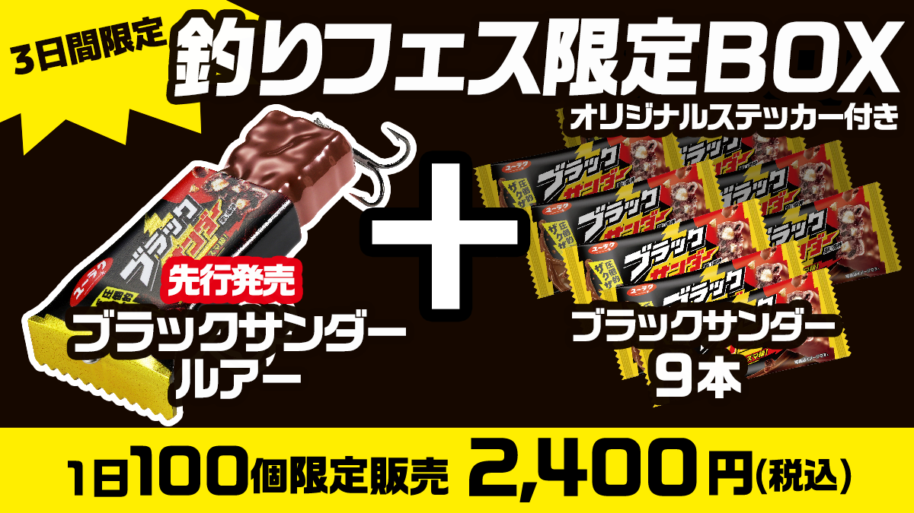
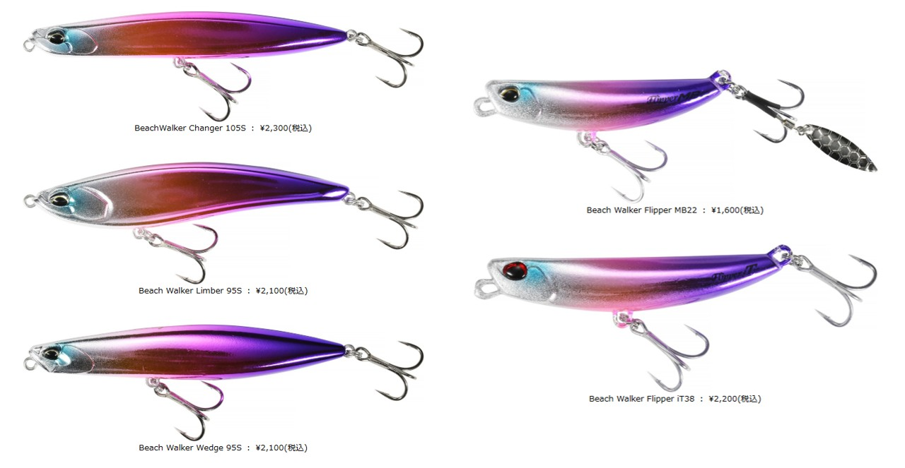
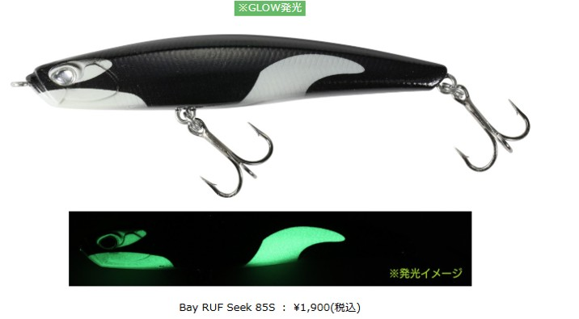
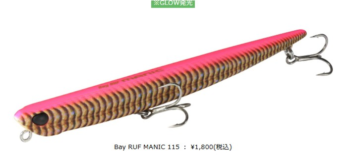
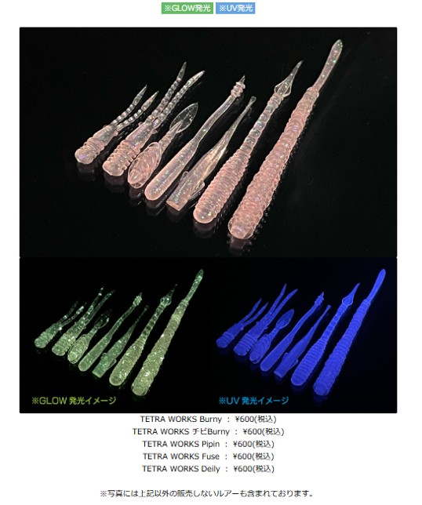
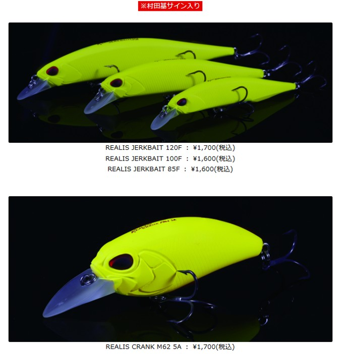

釣りフェス2026
釣りフェス2026は横浜で行われる年1回の日本最大の釣具イベントです。
今年は1月16～18までパシフィコ横浜で行われます。
今年は1月16～18までパシフィコ横浜で行われます。
釣りフェスの醍醐味は、新作の釣り具に触れられることと、限定品の物販があることです！
今回はDUOの物販を紹介します。
DUOの釣りフェス限定ルアー
人気メーカーのDUOから注目の物販情報を紹介していきます。
今年のDUOの物販は話題のコラボから会場限定ルアーまで幅広くラインナップ！
釣りフェスNo.1の話題ルアー
ブラックサンダールアー！！

大人気のお菓子ブラックサンダーとDUOが禁断のコラボ！
2026年春に販売開始ですが、釣りフェスに一足早く限定販売です。
1日限定100個販売！ほしい人はダッシュして手に入れよう！
DUOは計8種類の限定カラーを販売！
アンバーベイト

- changer 105S
- ¥2,300(税込)
- Limber 95S
- ¥2,100(税込)
- Wedge 95S
- ¥2,100(税込)
- Flipper MB22
- ¥1,600(税込)
- Flipper iT38
- ¥2,200(税込)
- BeachWalker 135MD
- ¥3,000(税込)
アンバーベイトカラーはビーチウォーカーシリーズの限定カラーに！
艶やかでゴールドベースなきれいなカラーです！
UVピンクマリアージュ
- Changer 105S
- ¥2,300(税込)
- Limber 95S
- ¥2,100(税込)
- Wedge 95S
- ¥2,100(税込)
- Flipper MB22
- ¥1,600(税込)
- Flipper iT38
- ¥2,200(税込)
こちらもビーチウォーカーシリーズの限定カラー。
UV発光カラーであり、紫色とシルバーカラーのグラデーションが美しい。
グローホットチャートRP

- Seek 85S
- ¥1,900(税込)
- MANIC 115
- ¥1,800(税込)
- Tide Minnow Slim 120
- ¥2,000(税込)
- Tide Minnow Slim 140
- ¥2,300(税込)
- Tide Minnow SPECTER 135SSR
- ¥2,500(税込)
シーバスゲーム用のBayRUFシリーズでラインナップ。
GLOW発光カラーであり、夜間でも視認性の高いカラー！
グローオルカ
- Bay RUF Seek 85S
- ¥1,900(税込)
シャチをイミテートしたオルカカラーで、白色ペイントがグローに！
ルミナスグローピンクバチRP
- Bay RUF MANIC 115
- Bay RUF MANIC 115
バチ抜け最強ルアーにバチ抜けに間違いないカラーとGlow発光による視認性UP
超バチ抜け特化ルアーが限定発売！
黒潮クジラ
- Tide Minnow SPECTER 135 SSR
- ¥2,500(税込)
黒潮クジラは超かわいい。
Tide Minnow SPECTER 135 SSRは去年末に発売されたばかりの期待ルアーに早速限定カラーが登場！
UVアンドロメダ
- TETRA WORKS Burny
- ¥600(税込)
- TETRA WORKS チビBurny
- ¥600(税込)
- TETRA WORKS Pipin
- ¥600(税込)
- TETRA WORKS Fuse
- ¥600(税込)
- TETRA WORKS Deily
- ¥600(税込)
UVアンドロメダはUV発光とGLOWのダブル発光仕様。
ライトゲームでは間違いない逸品
マットコルベットイエロー
- REALIS JERKBAIT 120F
- ¥1,700(税込)
- REALIS JERKBAIT 100F
- ¥1,600(税込)
- REALIS JERKBAIT 85F
- ¥1,600(税込)
- REALIS CRANK M62 5A
- ¥1,700(税込)
マットコルベットイエローは王様村田基の代表カラー。
村田基のサイン入り限定ルアーです！